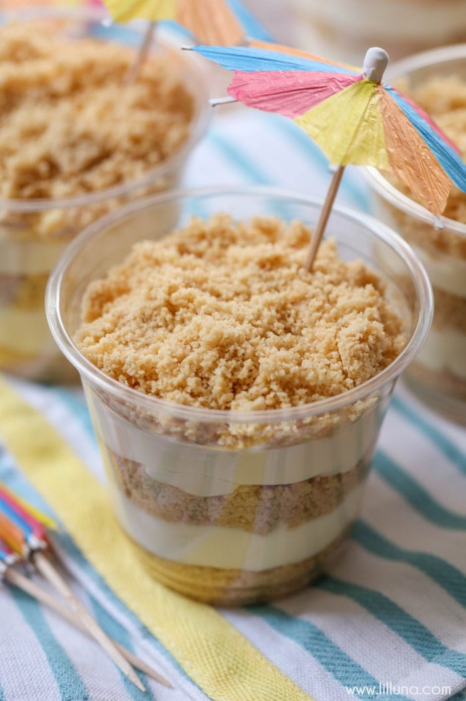

Sand

Description
OREO. Begin by smashing up Oreos. I put mine in my food processor and blended until they were crumbs. Set aside.
PUDDING. Mix cream cheese, butter, and powdered sugar with mixer in a medium bowl. Fold in cool whip until well blended. In a separate bowl mix pudding mix and milk with a whisk. Once combined well, add pudding to cream cheese mixture.
LAYER + GARNISH. Place a few tablespoons of Oreo crumbs in your cup or small jar. Add some of the creamy mixture (I do this by adding the creamy mixture to a gallon bag and cutting off the corner so it goes in the jar more easily.) Bang down on a wash cloth on the table to get all bubbles out. Add a few more tablespoons of Oreo Crumbs. Top off with some more cream mixture and sprinkle on a few more crumbs. Top off with more crumbs and a drink umbrella.
Ingredients
- 4 oz cream cheese softened
- 1/4 cup butter softened
- 1/2 cup powdered sugar
- 8 oz cool whip
- 1 box instant white chocolate pudding (or vanilla) 3.3 oz box
- 1 1/2 cups milk
- 1 package Golden Oreos
- Drink umbrellas
Steps
- Begin by smashing up Oreos. I put mine in my food processor and blended until they were crumbs. Set aside.
- Mix cream cheese, butter, and powdered sugar with mixer in a medium bowl. Fold in cool whip until well blended. In a separate bowl mix pudding mix and milk with a whisk. Once combined well, add pudding to cream cheese mixture.
- Place a few tablespoons of oreo crumbs in your cup or small jar. Add some of the creamy mixture (I do this by adding the creamy mixture to a gallon bag and cutting off the corner so it goes in the jar more easily.) Bang down on a wash cloth on the table to get all bubbles out. Add a few more tablespoons of oreo Crumbs. Top off with some more cream mixture and sprinkle on a few more crumbs. Top off with more crumbs and a drink umbrella.
- Refrigerate until ready to serve.